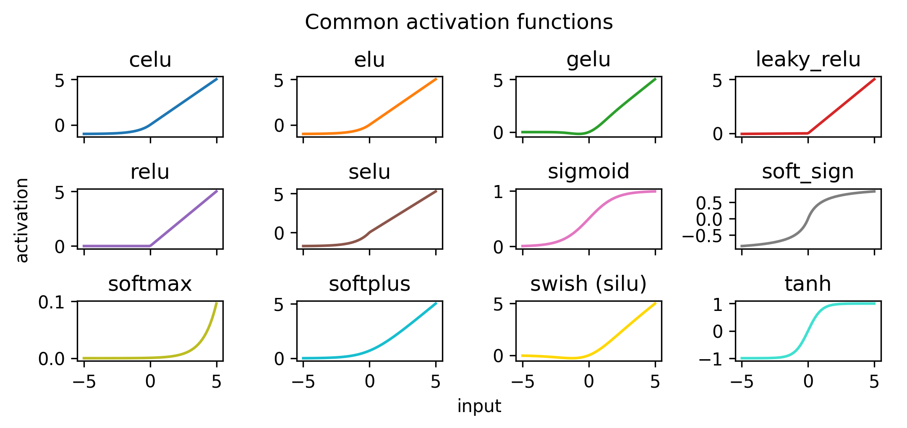
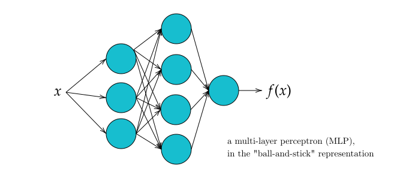

6 Machine learning
The blanket term machine learning indicates a shift in mindset for how computers complete a given task. When presented with such a task, one may try to solve it through a pen and paper worked conceptual solution. It is then up to us to tell the computer – in excruciating detail in it’s own language – each of the individual steps needed to implement the solution we came up with. This is known as programming a computer. But what if there was a way to show the computer many examples of our problem, and use an algorithm to learn a good solution by updating some internal state?
That’s machine learning! We find some inspiration for this in a quote from the fantastically written essay in (Samuel 1962), which is stated in the context of comparing human-written programs to possibly learned ones:
There are many mental processes that people are called upon to perform that cannot be, or at least have not been, reduced to a simple set of rules. Take the process of playing a game of chess, not of simply adhering to the rules of the game, but rather the process of playing a good game against an intelligent opponent. There are no known procedures for guaranteeing a win, and yet people learn to play the game and some few become very proficient. – Arthur L. Samuel
The basic idea (also made reference to in that essay) is this: maintain some internal state – literally just a set of numbers, which could e.g. pick a pre-defined strategy based on a value – and then update that internal state in some way by checking the performance. This rather simple statement carries a lot of ambiguous ideas, such as
- a notion of internal state
- some way to combine that state with data to produce a result
- a performance metric to assess the result after applying the state
- an update rule to improve the value of the state based on the performance
These ideas form the cornerstone of machine learning approaches, and we’ll unpack them all in detail below. Before continuing though, it’s worth noting the distinction between machine learning and deep learning – the latter is a subset of the former, and refers to a particular paradigm involving complex neural networks. Machine learning makes no assumptions on the form of the machine itself.
6.1 Definitions
Machine learning methods follow a shared set of abstract steps: given a dataset, we
- define a model with parameters \(\varphi\) (where the model is a way to combine \(\varphi\) with the data)
- construct a measure of performance for the model, called the objective function
- fit the model to the dataset through some update rule
- use the learned model to perform inference (apply the model to new data)
We can see this workflow reflected in the API of modern software packages, such as scikit-learn (Buitinck et al. 2013) and keras (Chollet et al. 2015). Using this framework and terminology, we’ll explore some useful models, reflecting on the developments that have occurred as a by-product of the modern era of computing.
6.2 Neural networks and deep learning
A model that would certainly be useful is one that can model the solution to any task at all. Neural networks are indeed this class of model; inspired by the way the brain handles the processing of information, they are proven to be universal approximators, i.e. given a continuous function \(g(\mathbf{x})\), where \(\mathbf{x}\) is an arbitrary-length vector of real-valued inputs, there exists a value of parameters \(\varphi\) such that a neural network \(f(\mathbf{x}, \varphi)\) satisfies
\[ |g(\mathbf{x}) - f(\mathbf{x}, \varphi)| < \epsilon~~~\forall~\mathbf{x},~\text{for }\epsilon>0~. \tag{6.1}\]
This is great! Though, it’s not necessarily this property that makes neural networks so popular, it’s more the fact that we can practically attain this performance. Said another way, it’s not just that there exists \(\varphi\), but that we can often find it in real life! This can be attributed both to the effectiveness of gradient descent as a learning algorithm, and the software/hardware that we have access to that breathes life into the training process.
So: what is a neural network in the first place?
At its simplest, a neural network is a sequence of location-scale transforms of the input data, with non-linear “activation” functions applied in-between to allow for non-linear modelling capabilities. This type of neural network is referred to as a multi-layer perceptron (MLP) or a feed-forward network (both namings given since I use them interchangeably in later sections). Each layer of an MLP represents a round of these computations. At its most complex, there’s a lot of funky ways to transform the data, including self-attention, convolutions, graph structure, and all sorts of other stuff. These types of specialized “architectures” are beyond the scope of what we’ll look at here, but are incredibly important for introducing inductive bias that helps to more efficiently identify useful information within the data.
The ingredients to a MLP are the weights \(w\), the biases \(b\), and the activation functions \(\sigma\). The weights represent the scale transform, and the bias the location transform. On the other hand, the activation function plays the role of “bending” the output such that we can model non-linear effects, i.e. anything with realistic complexity. Examples of common activation functions can be found in Figure 6.1, where there are all sorts of flavors to choose from, each with their own quirks (ReLU and its variants have been the gold standard for some time).
You’ll typically see all this represented in a ball-and-stick diagram, e.g. Figure 6.2. Each series of balls represents one set of computations with the weights, biases, and activation functions that are within that layer. The outputs from this are called activations (just to reference the application of the activation function). The thing we call a layer is then each set of parallel computations of this nature, which are then aggregated into the set of inputs to the next layer (if it exists, else it’s just the network output). Don’t get too hung up on this definition of the word “layer” though, it sort of breaks down when looking at modern architectures with very detailed computation steps.

6.2.1 What’s a “layer” in a MLP?
Here’s a compact formula for a computation of a single layer. Given a set of \(n\) activations from the previous layer (0th layer meaning just the data points), and \(k\) neurons in layer \(i\), the output of applying the neurons to the activations to obtain the \(i+1\)th layer is represented as a matrix equation:
\[ \textcolor[HTML]{17BECF}{ \underbrace{\left[\begin{array}{c} a_0^{(i)} \\ a_1^{(i)} \\ \vdots \\ a_n^{(i)} \end{array}\right]}_{\mathrm{activations for layer }i+1}}=\sigma\left(\textcolor[HTML]{FF7F0E}{\underbrace{\left[\begin{array}{cccc} w_{0,0} & w_{0,1} & \cdots & w_{0, n} \\ w_{1,0} & w_{1,1} & \cdots & w_{1, n} \\ \vdots & \vdots & \ddots & \vdots \\ w_{k, 0} & w_{k, 1} & \cdots & w_{k, n} \end{array}\right]}_{\text{weight matrix}}}\textcolor[HTML]{1F77B4}{\underbrace{\left[\begin{array}{c} a_0^{(i)} \\ a_1^{(i)} \\ \vdots \\ a_n^{(i)} \end{array}\right]}_{\text{activations for layer }i}}+\textcolor[HTML]{2CA02C}{\underbrace{\left[\begin{array}{c} b_0 \\ b_1 \\ \vdots \\ b_n \end{array}\right]}_{\text{bias vector}}}\right) \]
\[ \Rightarrow \textcolor[HTML]{17BECF}{\mathbf{a}^{(i+1)}} = \sigma\left(\textcolor[HTML]{FF7F0E}{\mathbf{W}}\textcolor[HTML]{1F77B4}{\mathbf{a}^{(i)}} + \textcolor[HTML]{2CA02C}{\mathbf{b}}\right)~, \]
where applying the activation \(\sigma\) is distributed to its elements, i.e. \[ \sigma\left(\left[\begin{array}{l} x \\ y \\ z \end{array}\right]\right)=\left[\begin{array}{l} \sigma(x) \\ \sigma(y) \\ \sigma(z) \end{array}\right]~. \tag{6.2}\]
This is essentially the definition of a neuron (the ball in the ball-and-stick diagram shown in Figure 6.2): a neuron is the \(j\)th function in a layer \(i\) that maps the activations \(\mathbf{a}^{(i)}\) from the previous layer into the \(j\)th element of the \(i+1\)th activation vector \(\mathbf{a}^{(i+1)}\), with a functional form as indicated in Equation 6.2. The sticks in that diagram would represent the elements of the weight matrix \(\mathbf{W}\), with missing connections between neurons \(a\) and \(b\) corresponding to zeroing out the \(w_{a,b}\) term in the weight matrix.
If we put the weights and biases for each layer all into one vector of parameters, that’s what we’ve been calling \(\varphi\), which represents the entire internal state of a neural network. If we then bottle up the way we apply \(\varphi\) to the data within the function \(f\) – whether that be as simple as the MLP above or something more complex – we can compactly represent a neural network as \(f(\mathbf{x}, \varphi)\) as above in Equation 6.1.
Since a neural network is a sequence of applications of Equation 6.2, it’s differentiable with respect to the parameters \(\varphi\) (and even if it’s more complex, this differentiability is always made to be present). That means we can optimize our neural network with gradient descent, which we spent considerable time on in the previous section.
One extra thing to mention is the different type of architectures that go beyond this simple MLP framing. We can think about these architectures as a kind of inductive bias on the space of possible functions that could be learned, e.g. through some kind of specific manipulations that take advantage of the format of the input data (sequences, images, sets etc.). To highlight a few:
Convolutional neural networks (Krizhevsky, Sutskever, and Hinton 2012) are one of the first types of domain-specific architecture, and manipulate an image through convolutional filters that measure local image features through things like pooling.
Transformers (Vaswani et al. 2017) perform fantastically well for sequential data (e.g. natural language), but have even shown generalization to other domains like images (Dosovitskiy et al. 2020). They use a mechanism called self-attention to extract information from sequential inputs, and are probably the most important architecture that exists at the time of writing in terms of their ability to generalize and scale.
Deep sets (Zaheer et al. 2017) is a method that incorporates the bias of the input data being an unordered collection. They have found use in e.g. particle physics (Komiske, Metodiev, and Thaler 2019), where objects like jets and their properties exist in unequal amounts across events, but without any specific ordering (though we’ve typically ordered them by \(p_T\) and then treated them as a sequence in the past).
Geometric deep learning (Bronstein et al. 2021) generalizes a lot of the above, and casts things in the language of equivariances and graphs, spawning the idea of e.g. graph neural networks (Scarselli et al. 2009).
There are countless other architectures, but we will focus on a particular neural network method (not necessarily an architecture) in the next section, as it makes up one of my applications, so we’ll spend a bit of extra time to sufficiently ground that work.
6.3 Normalizing flows
A normalizing flow is a trainable density estimator based on neural networks that admits both sampling and a tractable likelihood. Flows model a vector \(\mathbf{x} \in \mathbb{R}^D\) from an underlying distribution \(p_X(\mathbf{x})\) as a transformation \(\mathbf{x} = T(\mathbf{u})\), where \(\mathbf{u} \in \mathbb{R}^D\) is a vector of samples drawn from a chosen distribution \(p_U(\mathbf{u})\). We refer to the data distribution \(p_X(\mathbf{x})\) as the target distribution that we’re trying to model, and to \(p_U(\mathbf{u})\) as the base distribution that we transform to do this. This base distribution is normally something simple like a normal distribution, which offers some guarantees as to making the flow a universal density approximator (details in Papamakarios et al. (2019)).
How does this work? The transform \(T\) is the key, and is the thing we’ll be training in practice. We start by pointing out the defining property of flows, which is the requirement that \(T\) is both
- differentiable (the Jacobian of the transformation \(J_T(\mathbf{u}) \in \mathbb{R}^{D\times D}\) exists, where \(J_T(\mathbf{u})\) is defined as in Equation 5.1)
- invertible (the inverse transformation \(T^{-1}(\mathbf{x})\) exists).
- \(T^{-1}(\mathbf{x})\) is also required to be differentiable for flows!
Given these properties, we can invoke the change of variables formula from \(X\) to \(U\), which relates the target and base distributions by the determinant of the Jacobian matrix:
\[ p_X(\mathbf{x}) = p_U(\mathbf{u}) \left|\det{J_T(u)} \right|^{-1}. \]
Here, \(\mathbf{u}\) is calculated as the inverse transformation \(\mathbf{u} = T^{-1}(\mathbf{x})\) since we want the exact \(\mathbf{u}\) for our particular \(\mathbf{x}\) when evaluating the likelihood. We’ve also exploited the fact that the determinant of the inverse of a matrix is the inverse of the determinant.
You may have noted our extra requirement that the inverse transform is also differentiable — the existence of the Jacobian \(J_{T^{-1}}(\mathbf{x})\) lets us write the change of variables above in terms of only \(T^{-1}\) and \(\mathbf{x}\):
\[ p_X(\mathbf{x}) = p_U(T^{-1}(\mathbf{x})) \left|\det{J_{T{-1}}(\mathbf{x})} \right|. \tag{6.3}\]
These equations form the basis for constructing a flow, where we implement the transform \(T\) by using a neural network to control its parameters (e.g. a location-scale transform, where the location and scale are provided by a network).
One advantage of having a differentiable and invertible \(T\) is that we can compose multiple transforms in a row, with the result itself being both differentiable and invertible. Specifically, we can write, for \(T=T_1 \circ T_2\):
\[ T^{-1} = (T_1 \circ T_2)^{-1} = T_2^{-1} \circ T_1^{-1}~, \] \[ \det{J_T(\mathbf{u})} = \det{J_{T_1 \circ T_2}(\mathbf{u})} = \det{J_{T_2}(T_1(\mathbf{u}))}\det{J_{T_1}(\mathbf{u})}~. \]
Knowing that we can stack transformations freely, we have a similar paradigm to neural networks, where stacking more “layers” (here, transforms) could bring about a more expressive model. This is the “flow” part of a normalizing flow: a series of samples from \(p_U\) are flowing through a series of transforms \(T\) to arrive at something like the target density \(p_X\). The “normalizing” part comes from going the other direction via \(T^{-1}\), where data samples are “normalized” back to the base distribution1.
There are many types of transforms one can choose to satisfy these requirements (which can be partitioned into a bijective “transformer” and a non-bijective “conditioner”), but I’ll omit everything but the one I used in Section 6.3.2, and direct you to (Papamakarios et al. 2019) for a much more comprehensive review.
6.3.1 Training a flow
The goal is clear: we want to make our base distribution look like the target distribution. How do we quantify this?
Recall from Section 2.2.2 that we have a way to measure the divergence between two probability distributions through the expected difference in log-likelihood under the true distribution (or approximate distribution, noting the asymmetric result depending on our choice). Denoting the predicted distribution from the flow as \(q_X(\mathbf{x}; \theta)\) (where \(\theta\) comprises both the parameters of the base density \(\gamma\) and the parameters of the transform \(\phi\)), and the target density as \(p_X(\mathbf{x})\), we can write this explicitly as
\[ D_{\mathrm{KL}}[p_X(\mathbf{x}) || q_X(\mathbf{x}; \theta)] = -\mathbb{E}_{p_X(\mathbf{x})}\left[\log q_X(\mathbf{x}; \theta)\right] + \mathrm{constant} \] \[ \Rightarrow = -\mathbb{E}_{p_X}\left[\log p_U(T^{-1}(\mathbf{x} ;\phi); \gamma) + \log |\det J_{T^{-1}}(\mathbf{x}; \phi)|\right] + \mathrm{constant}~, \]
where we’ve substituted our expression for the flow likelihood in Equation 6.3.
This is a quantity we’d like to minimize, as to make \(p_X\) and \(q_X\) as “close” as possible. In practice, we’re likely going to have to substitute the expectation over the true (unknown) distribution with a Monte Carlo estimate using our data samples \({x_i}_{i=1}^{N}\), which turns this equation into
\[D_{\mathrm{KL}}[p_X(\mathbf{x}) || q_X(\mathbf{x}; \theta)] \approx-\frac{1}{N} \sum_{i=1}^N \log p_{\mathrm{u}}\left(T^{-1}\left(\mathbf{x}_i ; {\phi}\right) ; \gamma\right)+\log \left|\operatorname{det} J_{T^{-1}}\left(\mathbf{x}_i ; {\phi}\right)\right|+ \mathrm{constant}~.\]
This comes out to effectively minimizing the negative log-likelihood of the flow model on the data samples – we’re just fitting the model with maximum likelihood, as defined in Section 2.3.1! This is one example of how we can train a flow – we minimize this objective with respect to parameters \(\theta\), by e.g. gradient descent, since this is a differentiable expression in \(\theta\).
6.3.2 Masked Autoregressive Flows
A specific type of flow that we’ll encounter in the wild later is the masked autoregressive flow (Papamakarios, Pavlakou, and Murray 2017). The approach that this flow takes to density modelling is as follows:
When modelling a distribution across multiple random variables, one can break down their joint density into a product of conditional distributions through the probability chain rule as in Equation 2.3, and models these conditional distributions explicitly:
\[ p(x_1, \dots, x_N) = p(x_1)p(x_2 | x_1)p(x_3|x_2, x_1)\dots p(x_N | x_{N-1}, \dots, x_1) \] \[ =\prod_{i=1}^Np(x_i|\mathbf{x}_{j<i}) \]
Here, we’ve arbitrarily labelled our random variables \(x_i\) with indicies \(i\) from \(1\) to \(N\), and use these to construct our conditional distributions. Note, however, that we could shuffle the order of our random variables, then reassign them the index of their place in the array, and the relation would still hold. Despite this, the only important thing is that each conditional distribution assigned to \(x_i\) depends only on those \(x_j\) for which \(j<i\), regardless of the initial variable ordering. This is known as the autoregressive property.
One can model this relationship using a neural network in a single forward pass. By constructing a feed-forward network with equal input and output dimensionality, and assigning the same ordering to the input and output, we can simply drop (or mask) those connections for each output \(i\) with all input variables that have index \(j<i\). This way, there is no possible computational path between each output and the variables that come before that output in the ordering, meaning that the value of that output will be able to capture the nature of the relevant conditional \(p(x_i | \mathbf{x}_{j<i})\). These aspects together form a masked, autoregressive network.
This idea was first used in (Germain et al. 2015), which used it to output the density directly in one forward pass by having the outputs correspond to the individual conditional distributions. However, to use this network in a flow, which transforms one distribution to another, we can instead use the outputs of the neural network to parametrize the transform \(T\). The result is known as a masked autoregressive flow (MAF), and was introduced in (Papamakarios, Pavlakou, and Murray 2017).
The MAF as I used it involved a fairly simple implementation of \(T\) – a location scale transform:
\[ T(\mathbf{u}; \alpha, \beta) = \mathbf{\alpha} \cdot \mathbf{u} + \mathbf{\beta}~, \]
where \(\mathbf{\alpha}, \mathbf{\beta}\) are the scale and location parameter vectors respectively. These are vectors because there’s one entry corresponding to each entry in \(\mathbf{u}\), where the individual parameters \(\alpha_i, \beta_i\) are coming from the \(i\)th output of a neural network (or more precisely, the \(i\)th pair of outputs, since we have two values \(\alpha_i, \beta_i\) for every one input \(u_i\)), which has parameters itself \(\phi\). Training the flow is then done as in Section 6.3.1, with the masking mechanism from earlier in this section being put in place.
As a bonus, there’s a simple way to condition this transform on side information \(\mathbf{y}\) that provides context: we can just add \(\mathbf{y}\) as an extra input to the network (or multiple inputs if there’s more than one variable), and have it mix with every input, since each conditional distribution would also include \(\mathbf{y}\). We then have a MAF that can perform conditional density estimation, i.e. estimate \(p(x_1, \dots, x_N| \mathbf{y})\).
The naming is a bit extra, I know. But at least it’s not another play on “attention is all you need”.↩︎